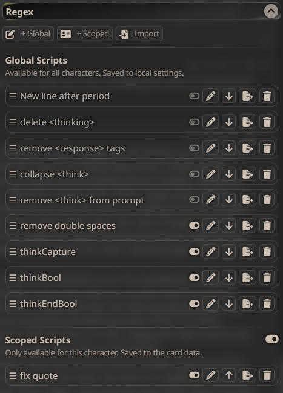
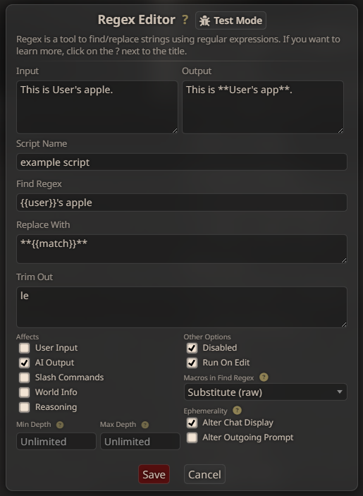

Regex（正则表达式）
它是什么？
正则表达式扩展允许用户自动检测文本字符串中的特定模式（称为"序列"）并对其应用操作（替换）。它可以与其他 SillyTavern 功能（如快速回复或 STscript）结合使用，成为一个强大的工具，或者简单地用于从聊天中删除某些词语。
相关链接
本文档不会深入解释编写正则表达式序列的过程。网上有许多在线资源可以帮助您。
前提条件
正则表达式是 SillyTavern 的内置扩展，无需额外设置。
您可以在 扩展面板中找到其设置。
常见使用场景
正则表达式通常用于对聊天中的某些词语应用查找替换功能、为某些词语或句子类型添加 Markdown 样式，或向 STscript 返回布尔值。
脚本列表

- 顶部的按钮用于创建新脚本。
- "全局"脚本将应用于所有角色，并保存到
settings.json中。 - "作用域"脚本仅应用于当前活动的角色，并保存到角色卡的数据中。
- "全局"脚本将应用于所有角色，并保存到
- "导入"允许您导入从其他 SillyTavern 实例导出的正则表达式脚本。
下方是包含一些操作按钮的脚本列表。
- 拖拽手柄（脚本名称左侧的三条横线）允许您将脚本拖放到任意顺序。
- 主开/关开关可以快速切换以启用或禁用脚本，而无需更改其他任何设置。已禁用的脚本以
删除线样式显示。如果此处禁用了某个脚本，它将无法通过快速回复或 STscript 触发。 - "编辑"（铅笔）按钮将打开正则表达式脚本编辑器。
- "移至作用域"（向下箭头）会将全局脚本转换为作用域脚本并应用于当前角色。反之（向上箭头），它会将作用域脚本转换为全局脚本。
- "导出"将使您的浏览器下载脚本的导出
.json文件，然后可以将其共享并导入到另一个 SillyTavern 实例中。 - "删除"（垃圾桶）删除脚本。
正则表达式编辑器

-
测试模式：这将在编辑器顶部打开一个对比视图。在"输入"框中输入一些文本，您的正则表达式脚本的结果将显示在"输出"框中。它是一个宝贵的调试工具，因为它会随着您对脚本设置所做的更改实时更新输出框。
-
名称：显示在扩展脚本列表中的脚本标签。这也用于通过斜杠命令或 STscript 触发脚本时的目标识别。
-
查找正则：这是用于检测您的目标文本模式的正则表达式。这通常是任何正则表达式脚本中最复杂的部分，也是最容易出错的地方。有关如何编写正则表达式序列的信息，请参阅页面顶部的链接。如果"查找正则中的宏"设置为如此（见下文），此框可以解析常见 SillyTavern 宏（如 {{user}}、{{char}} 等）的值。
-
替换为：这是将替换匹配序列的内容。在一个非常简单的示例中，如果您的"查找正则"是
apple，而"替换为"是orange，则任何应用该脚本的文本中，第一次出现的"apple"都会自动更改为"orange"。-
在此框中添加扩展特定的宏 {{match}} 将插入完整的匹配文本序列。这通常用于为特定词语应用样式。回到上面的示例，如果在"替换为"框中输入 **{{match}}** 而不是"orange"，则所有出现的"apple"一词都将被替换为
**apple**，从而对其应用粗体 Markdown 样式。 -
可以使用 $1、$2、$3 等变量来插入所谓的"捕获组"。这些是位于"查找正则"序列匹配到的文本序列中的子字符串。**请注意，使用这些变量需要匹配表达式包含括号组，以定义匹配字符串的哪个部分算作捕获组。**有关如何设置捕获组的参考信息，请参阅顶部的链接。
-
-
修剪：此框中输入的文本将在应用"替换为"过程之前从匹配的文本序列中删除。例如，如果我们的匹配是"apple"，而"修剪"框包含"le"，则字母"le"将在应用"替换为"过程之前首先被删除。由于我们的"替换为"框包含 **{{match}}**，结果将是用
**app**替换"apple"（首先删除"le"，然后对剩余的匹配文本应用粗体 Markdown 样式）。可以通过在每个要删除的字符串之间添加换行符来应用多次修剪。 -
影响范围：这个复选框列表定义了正则表达式脚本将应用于哪些文本来源。
- "用户输入"：脚本将在用户点击发送后，对用户输入的内容运行。
- "AI 响应"：脚本将在收到 AI 的响应后，对其内容运行。
- "斜杠命令"：脚本将对斜杠命令插入提示词/聊天的值运行。
- "世界信息"：脚本将在世界信息条目注入提示词时对其内容运行。需要勾选"更改发出的提示词"（或取消勾选两个临时性复选框）。
- "推理"：脚本将对聊天补全 API（如 Gemini 或 Deepseek）返回的"推理"对象的内容运行。如果在"临时性"下勾选了"更改发出的提示词"，脚本也将应用于后续聊天回合中添加到提示词的任何推理块。
- 如果此处所有内容都未勾选，该脚本在正常聊天期间将永远不会激活，但它仍可通过斜杠命令或 STscript 激活。
-
其他选项：
- "已禁用"会阻止脚本运行。这用作覆盖，以便在您不想更改脚本的任何设置，且/或不想通过脚本列表上的开关完全禁用它（因为这样做会阻止斜杠命令触发它）时，防止脚本运行。
- "编辑时运行"使脚本在聊天消息被编辑后也运行。如果未勾选，已编辑的聊天消息内容将不会触发脚本。
-
查找正则中的宏：选择是否替换"查找正则"框序列中存在的宏（如 {{user}}、{{char}} 等）。
- "不替换"将使任何 SillyTavern 宏被忽略，因此正则表达式脚本在搜索时会将其视为字面量。
- "原始"将逐字发送宏的值。如果宏的值包含某些特殊字符，这可能会改变正则表达式脚本搜索文本的方式。
- "转义"将在每个字符前添加一个正则表达式转义斜杠
\，以确保它们不会意外改变整体正则表达式序列。如果宏的值中包含某些特殊字符，这会很有用。
深度设置
最小/最大深度设置提供了对正则表达式模式将影响聊天历史中哪些消息的精确控制：
-
最小深度：仅影响聊天历史中至少有 N 级深度的消息
- 0 = 最后一条消息
- 1 = 倒数第二条消息
- 以此类推
- 当为空（设置为"无限制"）或为 -1 时，也将影响"继续"操作时要继续的消息
-
最大深度：仅影响聊天历史中深度不超过 N 级的消息
- 必须大于最小深度，正则表达式才会生效
- 系统提示词和实用程序提示词不受这些设置影响
例如，将最小深度设置为 0，最大深度设置为 2，将只对聊天中最近的三条消息应用正则表达式。
标志
默认情况下，"查找正则"模式区分大小写，并且只应用于第一个匹配项。要调整此行为以及其他正则表达式标志，您可以按如下方式添加它们：
/yourpattern/flags示例：/yourpattern/gi 将匹配文本中所有出现的"yourpattern"，无论大小写。
一些最常用的标志：
i：不区分大小写g：全局（应用于所有匹配项，而不仅仅是第一个）s：dotAll（将输入视为单行，因此.会匹配换行符）m：多行（将输入视为多行，因此^和$匹配每行的开头/结尾，而不仅仅是整个字符串）u：Unicode（将输入视为 Unicode，因此\d、\w等将匹配 Unicode 字符）
有关正则表达式标志的更多信息，请参阅以下 MDN 页面：使用标志进行高级搜索
临时性
默认情况下（当此处两个复选框均未勾选时），正则表达式脚本将直接编辑存储在聊天 JSONL 文件中的文本值。这确保了发出的提示词和聊天显示始终包含相同的值。但是，对聊天文件的这些更改是不可撤销的。
如果您不希望发生这种情况，您可以启用此处的任一复选框，以将正则表达式脚本的影响限制在仅显示或仅发出的提示词。
如果只勾选了其中一个复选框，则不会对聊天文件进行任何更改，但只有勾选的项目会发生变化。这意味着您看到的内容和 LLM 看到的内容将不同。请谨慎使用此功能。
如果两者都选中，脚本将在所有方面正常运行，唯一的例外是它不会将任何更改写入聊天文件。
高级用法
虽然正则表达式通常作为简单的查找/替换工具使用，但它也可以以更复杂的方式使用。
例如，"替换为"框可以包含一组 CSS 规则和 HTML，以便在聊天中找到某个特定词语时添加特定样式的 HTML 元素。这需要在用户设置面板中取消勾选"在响应中显示 <tags>"复选框。
脚本也可以设置为在正常使用时从不触发，而是通过斜杠命令在 STscript 内的逻辑检查中触发。"替换为"框将包含一个脚本识别的唯一值，以指示逻辑检查的结果为真或假。这将正则表达式的实用性扩展到了所有斜杠命令的全部功能，允许基于聊天内容实现真正无限的控制和自动化程度。